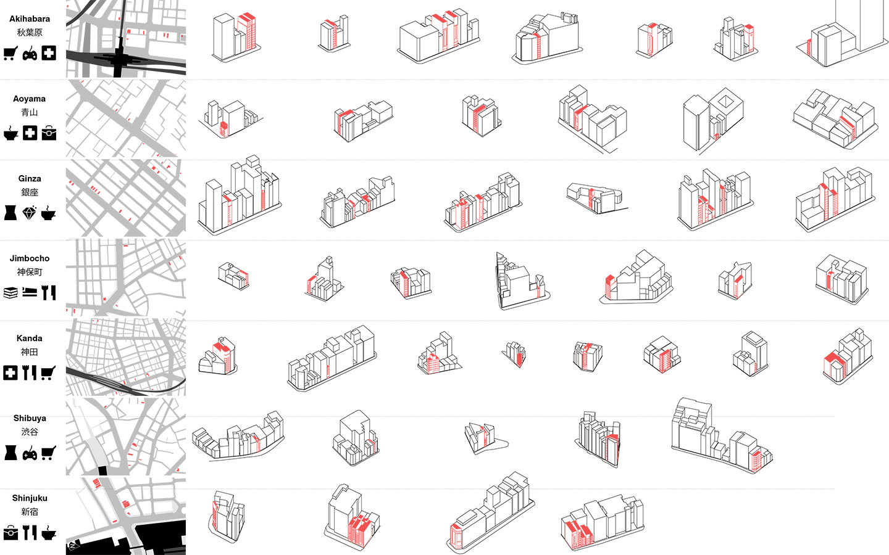
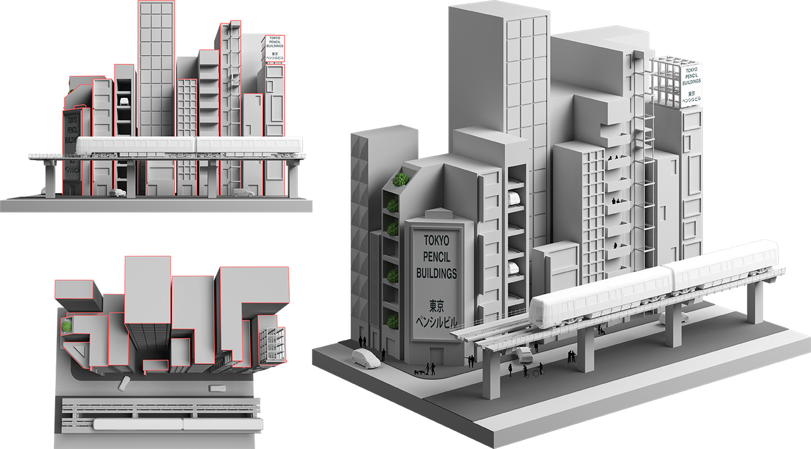
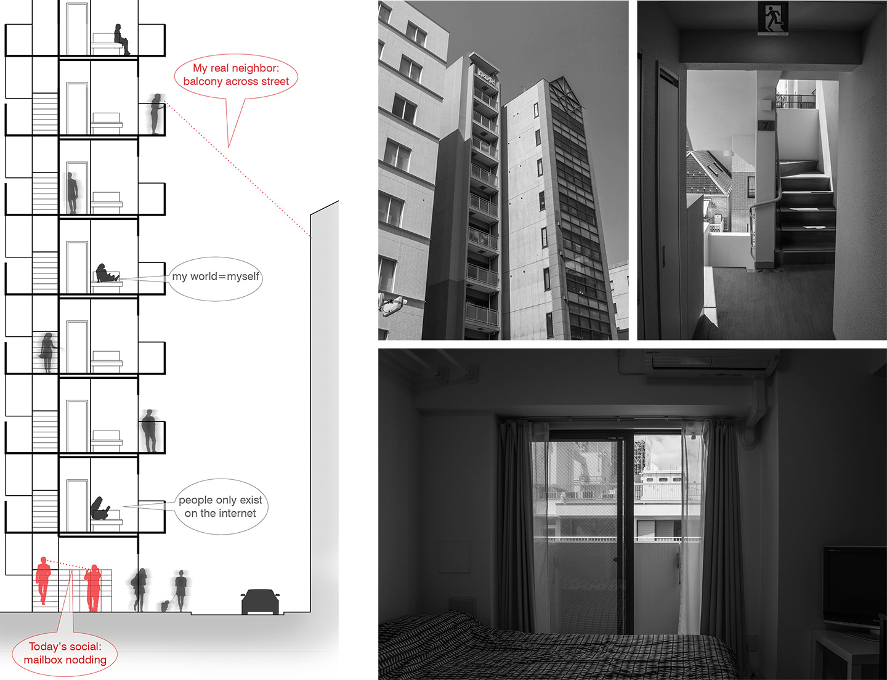

THE TYPOLOGY
As a vernacular type, Tokyo pencil building presents a bottom-up architectural response to the city's socio-economic transitions with frequent subdivision of land
ownership under intense land use. Most of them are found in high-density neighborhoods around transit stations, where resources of daily work-live routines are within
walking distances to fulfill interpersonal activities and thus reduce the demands for larger room sizes.
Part of the research documentation derives from my independent study between 2016 and 2017, supported by the Open City Studio program at
University of Miami School of Architecture and supervised by faculty members: Teofilo Victoria, Adib J. Cure, Steven Fett, Carie Penabad.
 Tokyo pencil building documentation under UM faculty supervision
 The front facades may have cheated you...
PARADIGM OF ISOLATION
In addition to micro business, pencil buildings make perfect solo dwellings for the compact layouts that make each floor an affordable self-contained solo life without the 'troublesome next-doors'. On the other hand, the one-unit-per-floor paradigm informs social isolation problems in solo living, which has increasingly become a significant challenge to contemporary Japanese society as reflected in the 2021 administrative appointment of 'Minister of Loneliness' (孤独担当大臣) against increasing incidents of lonely suicide and undiscovered death. While offering spatial independence in a solo universe, the vertical separation of pencil building dwellings reduces residents’ daily interaction to occasional noddings at elevators and mailboxes. During my week in an Airbnb pencil-building studio, I felt closer to the unseen person living across the street from my balcony than anyone above or beneath my unit: at least we could discover each other’s flower tastes by showing off our bonsai on the facing balconies.
 My pencil building experience in an Airbnb room. Ueno, Tokyo, Summer 2018DESIGN FOR ALTERNATIVE PENCIL DWELLING
While advancing pencil building as a vernacular type for Tokyo's futures of solo living, it is not necessary to keep the paradigm of isolation.
A few questions need to address for alternative design as both provocation and preservation:
What space do we want to keep completely to oneself?
Which part of life would we like others to join?
When to be together and when to solo?